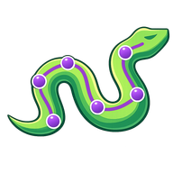
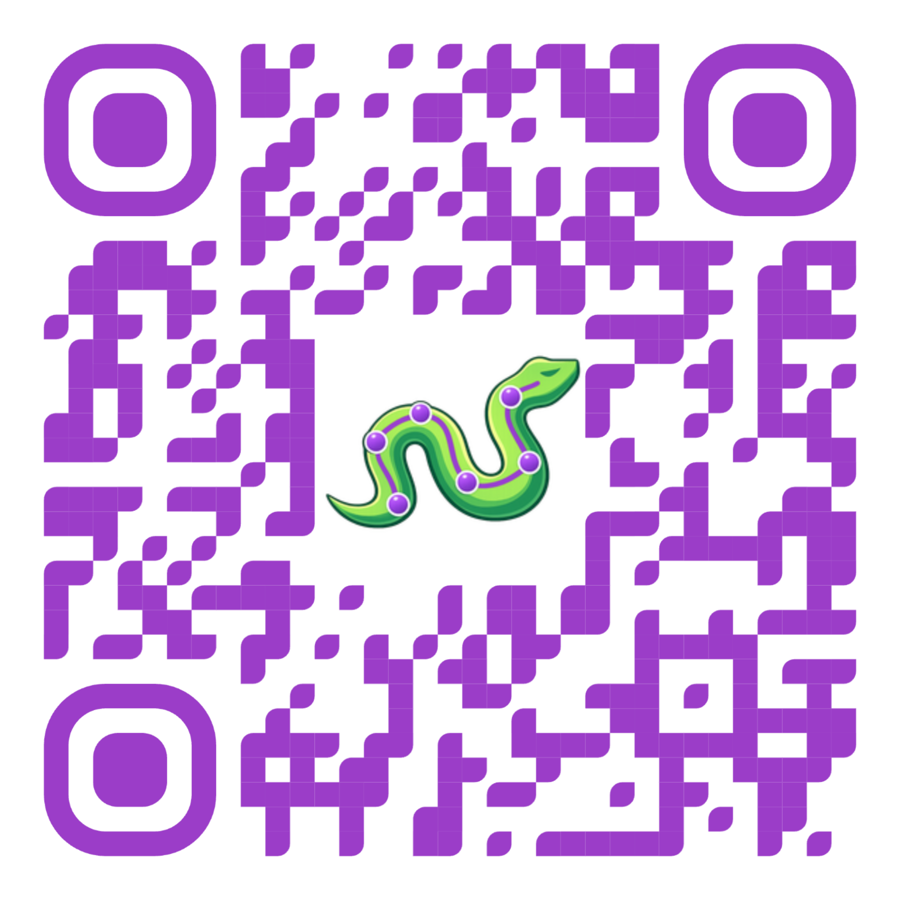
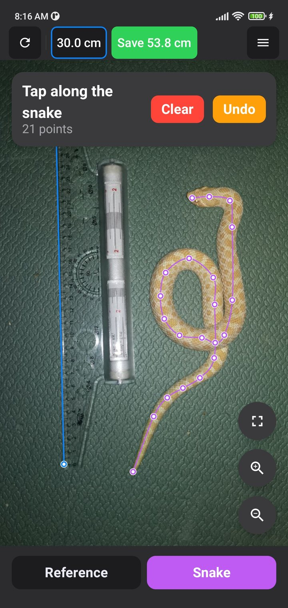
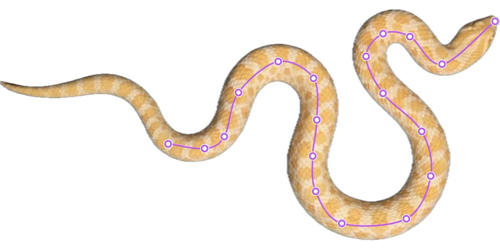
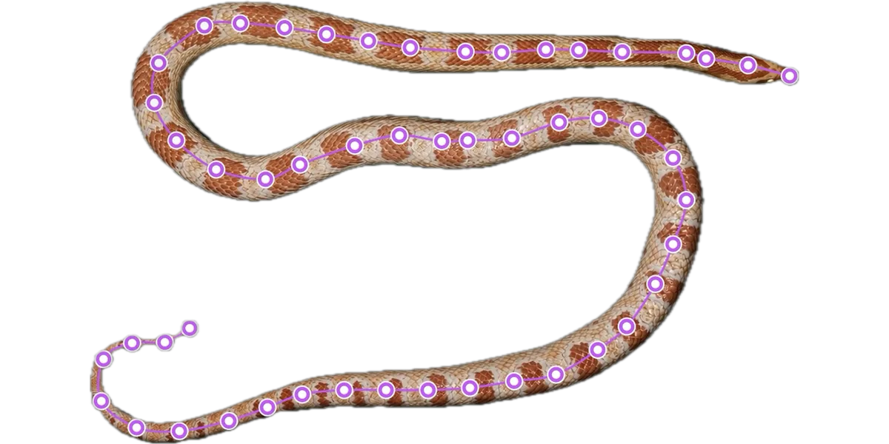
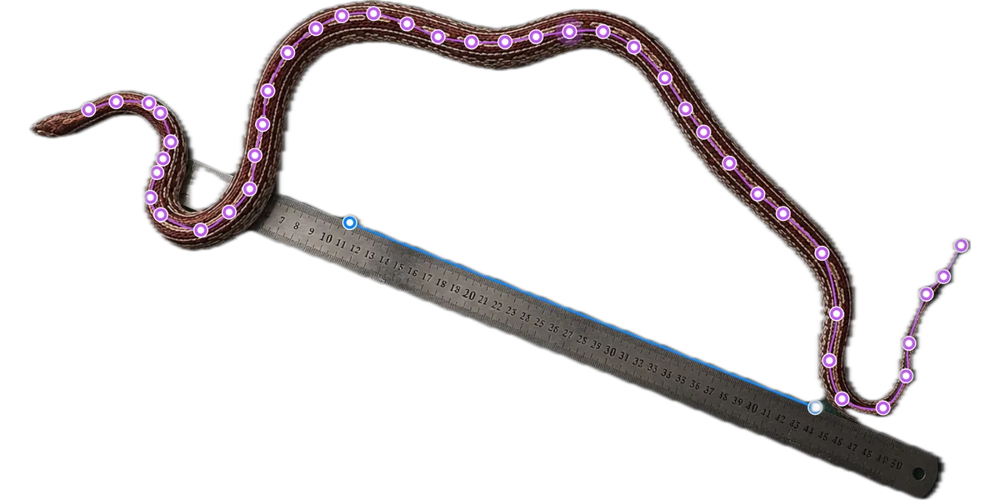

Snake MeasurerMeasure length from a photo, auto-detect with AI, and track every snake's growth over time. Free, and works on any device.

Scan to install



Take a photo of your snake next to a reference object like a ruler or a card.
Mark two points on the reference object and enter its known size.
Trace points along the body — or let AI auto-detect it. The app calculates the real length instantly.
Pixel-accurate calculations based on reference object scale.
Let AI trace your snake and the reference for you — no careful tapping.
Track length and growth rate over time with clear charts.
Keep a separate profile and history for every snake you own.
Works offline; sign in to back up and sync across your devices.
Centimeters, millimeters, meters, inches, or feet — your choice.
Upload a photo of your snake with a reference object (ruler, card, etc.). Mark the reference, enter its size, then trace along your snake's body. The app uses the reference scale to calculate the real length.
Any object with a known size: a ruler, a card (85.6 mm), coin, or anything you can measure. Place it next to your snake in the photo.
Accuracy depends on photo quality, reference placement, and tracing precision. For best results, take a top-down photo with the snake fully visible and the reference object nearby.
Yes! The free version includes measuring, growth charts, CSV export, and cloud sync. Premium unlocks unlimited saved measurements, multiple snake profiles, and AI auto-detect.